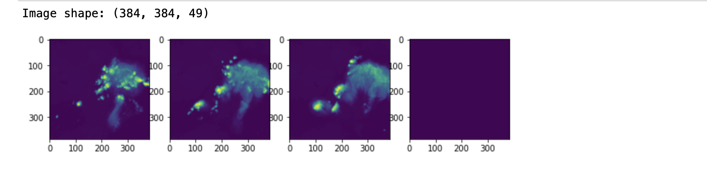
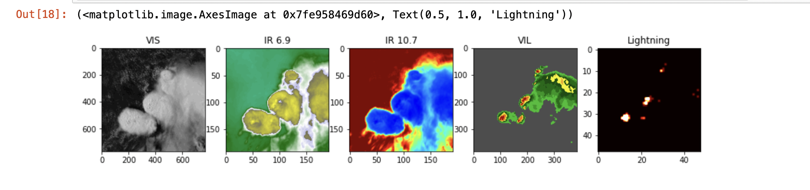
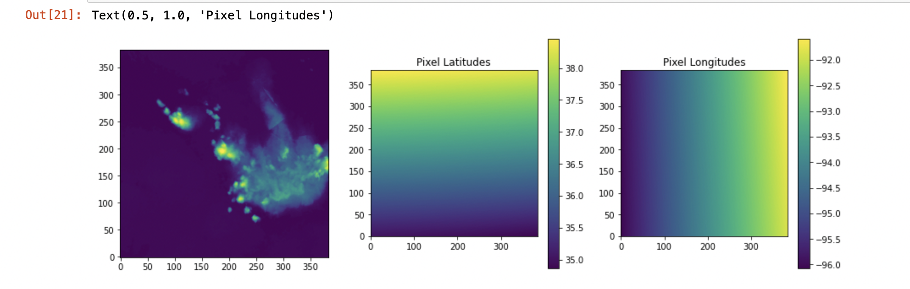
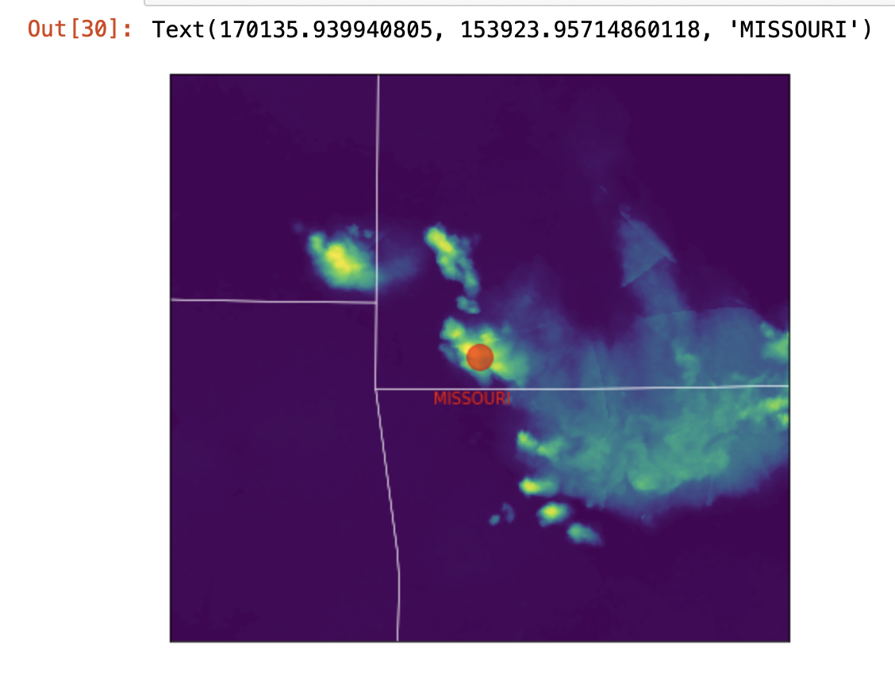
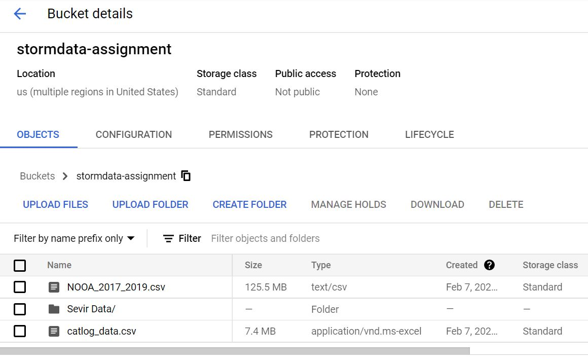
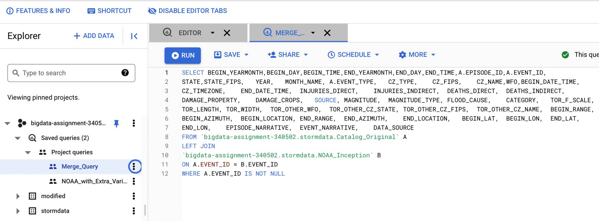
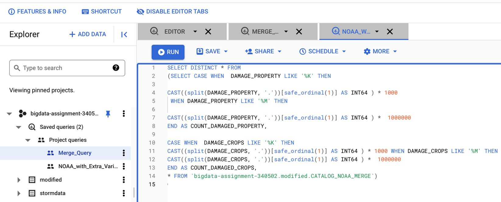
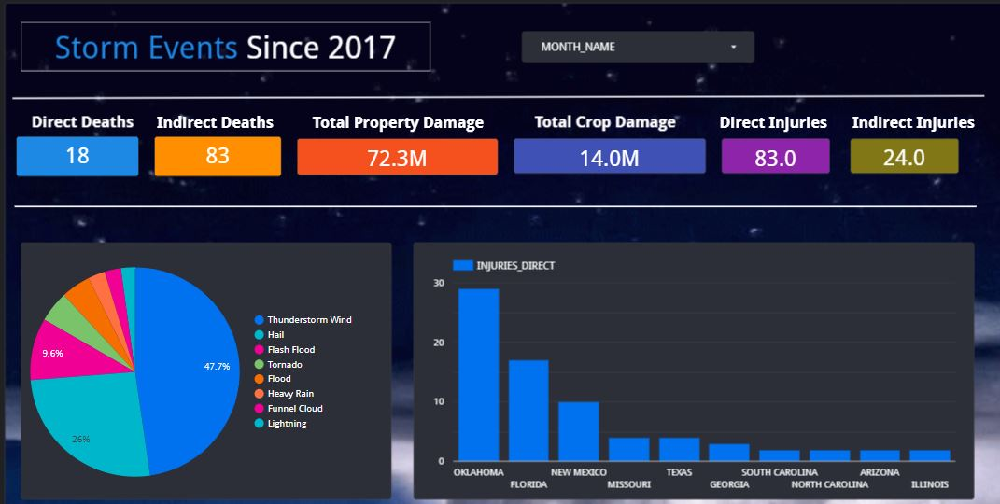
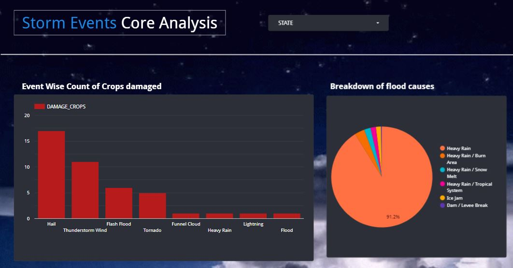

In this codelab we are going to see 2 things:
- SEVIR Data Analysis on a Sample ID
- How to work with Google Buckets, Google Data Studio and Big Query
Resources:
- NOAA's Storm Event Database:Link to NOAA
- SEVIR - The repository that contains SEVIR Data details
- SEVIR tutorial SEVIR Tutorial
- Google Data Code - great tutorial for Google Data Studio
- A blog that we used when getting started with Google Codelabs
The Avengers
- Ankana Asit Baran Samanta (Wonder Woman) 🦸🏼♀️
- Sreepad Parigi (Iron Man) 🦹♀️
- Parth Shah (Spider Man) 🕸
What is Sevir 🌪 ❓
The Storm EVent ImagRy (SEVIR) dataset is a collection of temporally and spatially aligned images containing weather events captured by satellite and radar. This dataset was created using publically available datasets distributed by NOAA, including the GOES-16 geostationary satellite, and data derived from NEXRAD weather radars, both of which are available on the Registry of Open Data on AWS.

Question: Modify the ipynb with Event ID: 835047
As the goal was to run on a single event id we did not really wanted to save almost 25 GB's of data on our machines so we did following steps!
STEP 1:
We have created a function which takes input as the "EVENT ID" and return files required to download and index where this event is present in the that files
def get_filename_index(event_id):
catlog = pd.read_csv("https://raw.githubusercontent.com/MIT-AI-Accelerator/eie-sevir/master/CATALOG.csv")
filtered = pd.DataFrame()
for i in event_id:
filtered = pd.concat([filtered,catlog[catlog["event_id"] == int(i)]])
filename = filtered['file_name'].unique()
fileindex = filtered['file_index'].unique()
print("We have got the locations, Lets Download the files")
return filename, fileindex
Output
$ We have got the locations, Lets Download the files
STEP 2:
Once we know what files to download we use boto3 to download that specific files on our local machines.
def download_hf(filename):
resource = boto3.resource('s3')
resource.meta.client.meta.events.register('choose-signer.s3.*', disable_signing)
bucket=resource.Bucket('sevir')
for i in range(len(filename)):
filename1 = "data/" + filename[i]
print("Downloading",filename1)
bucket.download_file(filename1 , "SEVIR/"+filename[i].split('/')[2])
Output
$ We have got the locations, Lets Download the files
STEP 3
We make a new H5 format file which has all image type data for inputed EVENT ID. Making the process faster
def One_Sample_HF(directory,fileindex):
filenames = next(walk(directory), (None, None, []))[2] # [] if no file
for i in range(len(filenames)):
print(directory+filenames[i])
if filenames[i] == '.DS_Store':
break
with h5py.File(directory+"/"+filenames[i],'r') as hf:
image_type = filenames[i].split('_')[1]
if image_type == "IR107":
event_id = hf['id'][int(fileindex[1])]
IR107 = hf['ir107'][int(fileindex[1])]
if image_type == "VIL":
VIL = hf['vil'][int(fileindex[3])]
if image_type == "IR069":
IR069 = hf['ir069'][int(fileindex[2])]
if image_type == "VIS":
VIS = hf['vis'][12]
hf1 = h5py.File(str(event_id)+'Sample.h5', 'w')
hf1.create_dataset('vil', data=VIL)
hf1.create_dataset('vis', data=VIS)
hf1.create_dataset('IR107', data=IR107)
hf1.create_dataset('IR069', data=IR069)
print("Downloded")
Output
$ Downloded
Well after we download the sample file rest all files are deleted. We have come down from 23.75 GB to 73 MB
Following are some output from our IPYNB File:
- Accessing an Event

- Including Lighting with Color

- Geographing the Event

- Bitmap Image

Google cloud platform(shortly called as "GCP") is a public cloud vendor that offers a suite of computing services which are developed by Google. The platform includes a wide range of services that can be used in different sectors of cloud computing, such as storage and application development.
Major services of GCP include:
- Computing and hosting
- Storage and database
- Networking
- Big Data
- Machine learning
GCP services can be accessed in three ways:
- GCP Console (web-based GUI)
- Command-line Interface(CLI)
- Client Libraries
GCP like many cloud providers offers pay-as-you-go pricing structure. We can only pay for the services that we use. We signed up for the 90 day, $300 free trial that lets us explore and evaluate GCP's products and services.
The following GCP applications were used for this assignment:
- Google storage buckets Creating Buckets
- Google BigQuery BigQuery Introduction
- Google Datastudio DataStudio
Google Storage buckets:
Sample data from Sevir's Amazon store were moved to Google storage bucket. As described in the 2nd page, the h5 files corresponding to the Event ID: 835047 gets downloaded through the code written in the ipynb file. These h5 files are then moved to the Google storage bucket.
We can also download specific files using AWS CLI.
Google BigQuery:
BigQuery was used to join the csv file(from the storm events csv files) which has the Event ID: 835047 with the records matching in the catalog.csv file. This was done for the years 2018 and 2019.
Google Data Studio:
Data Studio was used to create visualizations on the data that we obtained with the join from BigQuery. Custom queries were written for some part of the visualizations.
Google Data Studio
Now lets load some sample data into Google Data Studio. We will load the data into Google Storage bucket and access it in Google BigQuery to create data insights using SQL.
- Create an account on Google Cloud Storage
- In the Cloud Storage dashboard, first we need to create a new project
- Once the project is created make sure that the same project is selected in the Select a Project dropdown
- Click on ‘Create Bucket'
- Give the name for the storage Bucket and access control information
- After the bucket gets created, we can load the sample data of SEVIR files and Storm Files

Google BigQuery
After loading the data in Google Cloud Storage, we will access the data in Google Bigquery to query the information from the Storm data.
- Connect the data source from Google storage
- Join the Catalog.csv data with Storm data

- Create sample queries in SQL to create dashboards in Google DataStudio

After the query and dataset are processed and prepared in Bigquery, lets make some insightful dashboards on Google Data Studio
The complete dashboard can be found at Storm Impact Analysis

